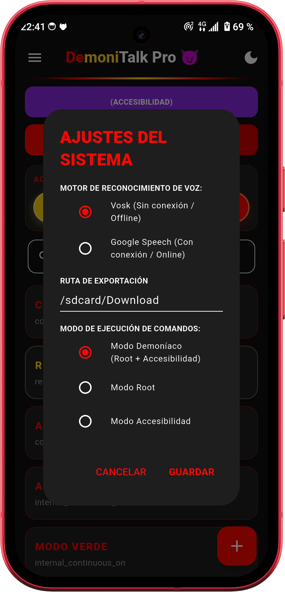

01
Asistente de Voz y Modo Secreto
Control por voz interactivo mediante interfaz flotante con biblioteca de conversación local offline y avatares vectoriales.
Asistente de voz avanzado y motor de automatización con biblioteca de conversación local offline y acceso root para Android.
Control por voz interactivo mediante interfaz flotante, secuencias de macros, cuadrículas táctiles y automatización root a nivel de sistema.

Echa un vistazo a la interfaz demoníaca y los paneles flotantes del asistente.





Diseñado para control avanzado, ejecución de macros y reconocimiento de voz local.
Control por voz interactivo mediante interfaz flotante con biblioteca de conversación local offline y avatares vectoriales.
Ejecuta disparadores personalizados, comandos de consola y automatización a nivel de sistema con privilegios root.
Encadena toques, deslizamientos, superposiciones numéricas y eventos de teclas para crear secuencias interactivas programables.
Alterna dinámicamente entre el reconocimiento de voz offline de Vosk y el reconocimiento de Google.
Temas oscuros y claros con respuesta visual dinámica y tacómetro de audio animado.
Gestiona configuraciones de comandos y macros mediante archivos de respaldo JSON locales.
Asegúrate de que tu entorno cumple con los requisitos previos para las funciones de automatización.
Se requiere API 26 o superior
Magisk o KernelSU recomendado
Necesario para la automatización de macros
Necesario para la interfaz flotante
El acceso root otorga a DemoniTalk Pro permiso para ejecutar comandos del sistema y acciones de automatización. Instálalo solo en dispositivos bajo tu control.